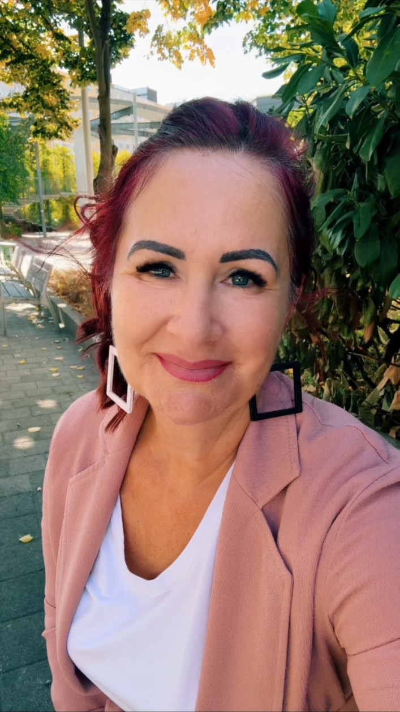
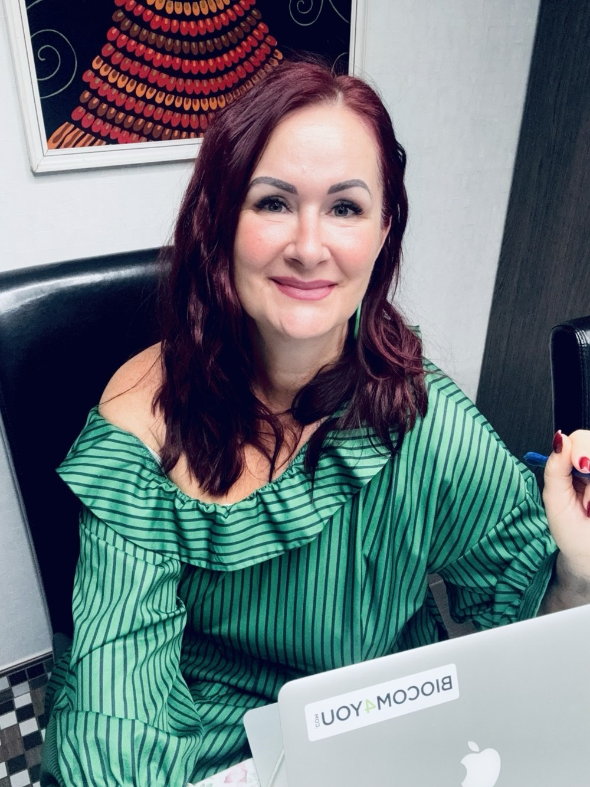

Életmód és szokások
Jobban figyelnél magadra, de a hétköznapokban mindig háttérbe szorulsz? Megkeressük, mi nehezíti a változtatást, és hogyan alakíthatsz ki az életedhez illő, fenntartható szokásokat.
Szeretnék magamra figyelni ↗Van, amikor egy figyelmes beszélgetés segít meglátni a következő lépést. Életmódban, munkában vagy a kapcsolataidban — induljunk el onnan, ahol most vagy.
Megteszem az első lépést ↗
Nem kell kész válaszokkal érkezned. Elég, ha érzed, hogy valamin szeretnél változtatni. A közös munkában megfogalmazzuk, mi fontos neked, és mit tudsz tenni érte.
Jobban figyelnél magadra, de a hétköznapokban mindig háttérbe szorulsz? Megkeressük, mi nehezíti a változtatást, és hogyan alakíthatsz ki az életedhez illő, fenntartható szokásokat.
Szeretnék magamra figyelni ↗Döntés előtt állsz, váltanál, vagy elveszett a lendületed? Átgondoljuk a céljaidat, a lehetőségeidet és a határaidat, hogy tudatosabban választhasd meg a következő lépésedet.
Szeretnék tisztábban látni ↗Nehéz kimondani, mire vágysz? Visszatérő konfliktusokkal vagy bizonytalansággal küzdesz? Teret adunk az érzéseidnek, és ránézünk a saját igényeidre, reakcióidra és döntési lehetőségeidre.
Szeretném jobban érteni önmagam ↗Közelebb kerülnél a gyermekedhez, de a beszélgetések gyakran vitába fordulnak? Szülőként abban támogatlak, hogy felismerd a saját reakcióidat, és megtaláld, mit tehetsz a kapcsolódásért.
Szeretnék közelebb kerülni ↗
A saját életemben is többször kellett újraterveznem. Tudom, mennyit jelenthet, amikor van melletted valaki, aki figyel rád, és akivel őszintén átgondolhatod, merre szeretnél továbbmenni.
Életmódváltó coachként figyelemmel és kérdésekkel kísérlek. Fontos számomra, hogy a saját felismeréseidre építve találj olyan megoldásokat, amelyekkel azonosulni tudsz.
A beszélgetéseinkben helye van a bizonytalanságnak, a csendnek és az új gondolatoknak is. A célunk az, hogy tisztábban láss, és legyen egy megvalósítható következő lépésed.
Az otthonod nyugalmából is részt vehetsz a beszélgetéseinken. Egy csendes helyre és stabil internetkapcsolatra lesz szükséged.
Ha a személyes találkozást kedveled, előre egyeztetett helyen és időpontban beszélgetünk.
Szép időben akár sétálva is coachingolhatunk. Így a beszélgetés mellé egy kis mozgás és szabad levegő is társul. Az útvonalat és a nyugodt beszélgetés lehetőségét előre egyeztetjük.
Hívj fel vagy írj egy e-mailt. Pár mondatban elég elmondanod, milyen területen keresel támogatást.
Egy 10–15 perces telefonos beszélgetésen áttekintjük, miben segíthet neked a coaching, és illik-e hozzád a közös munka.
Egyeztetjük a kereteket, a díjakat és a találkozás módját. Az alkalmakon a céljaidra és a megvalósítható lépéseidre figyelünk.
Két személyes élmény a közös beszélgetéseinkről.
„És a mondataid is nagyon megrögzülnek bennem és adott esetben abból élek. És sokkal könnyebben elengedem🤷🏻régen azért nem így volt. Szóval rengeteget adsz, jó hogy vagy nekunk”
„Egy hatalmas kő esett le a szivemről,lelkemről a beszélgetésünk után .”
„Beszélgetésünk után azt éreztem,hogy újra vissza jött a kedvem mindenhez.”
A visszajelzések egyéni tapasztalatokat mutatnak be; a coaching megélése és eredménye személyenként eltérhet.
A számodra fontos helyzettel dolgozunk. Kérdésekkel, visszajelzésekkel és közös gondolkodással segítek megérteni, hol tartasz, hová szeretnél eljutni, és milyen lépést tudsz vállalni.
Ezzel is érkezhetsz. Az első beszélgetések része lehet annak tisztázása, mi foglalkoztat, és min szeretnél változtatni.
Igen. Egyéni coachingban a saját megéléseddel, kommunikációddal, határaiddal és döntéseiddel dolgozunk — párkapcsolati és szülői témákban is.
Az életmód-coaching a szokásaid és a változtatás támogatásáról szól. Nem diagnosztizál és nem helyettesít orvosi ellátást vagy pszichoterápiát. Az első egyeztetésen azt is átbeszéljük, hogy a témád coaching keretében támogatható-e.
Mondd el, mi foglalkoztat. Megnézzük, hogyan tudlak támogatni, és melyik találkozási forma illik hozzád.
+36 30 690 7706marczygabriella76@gmail.com